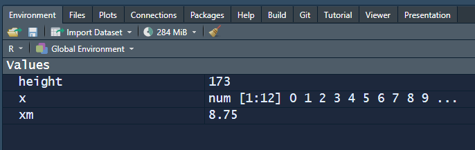
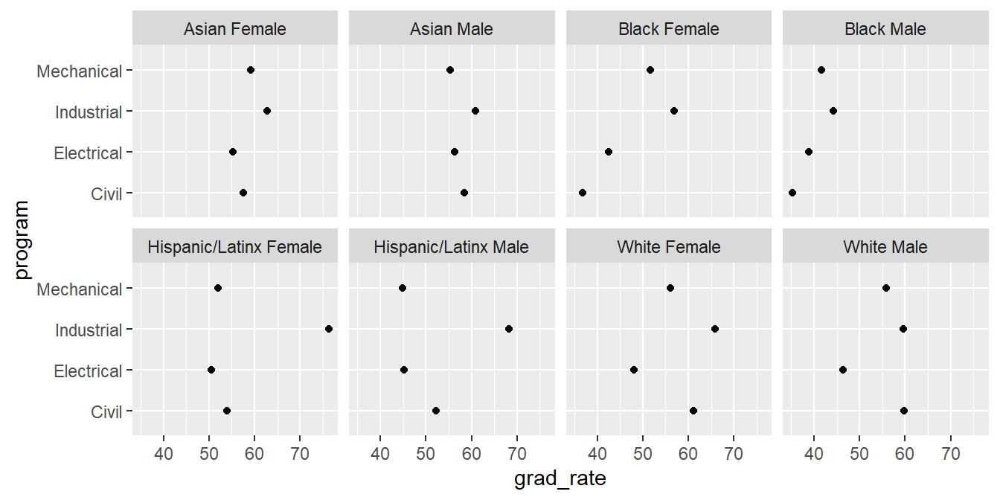

# R basics tutorial
# R. Layton
# 2022-06-07 R basics
An introduction to R—a free software environment for statistical computing and graphics.
Prerequisites
Our tutorials assume that you
- Have completed the Before you arrive instructions
- Start your R session by launching the RStudio project you created, e.g.,
midfield-institute-2022.Rproj
Scripts
We recommend that you write your lines of code in a script. Scripts can saved, edited, and run again and again.
- Use File > New File > R Script to create a new R script
- File > Save As… to name the file (we suggest
01-R-basics.R), then save it to thescriptsdirectory - At the top of the script, add a minimal header, something like:
The hash symbol # denotes a comment in R, that is, a line that isn’t run. Comments are annotations to make the source code easier for humans to understand but are ignored by R.
In code chunks like the one above you should see a “Copy to clipboard” icon in the upper right corner. Clicking on the icon copies the code chunk to your clipboard and you can paste it into your R script and edit as needed.
Next,
- Use
library()to load packages used in the script.
# packages
library("midfieldr")
library("ggplot2")Run the script by clicking the Source button. Alternatively, you can use the keyboard shortcuts ctrl A (MacOS cmd A) to select all lines then ctrl Enter (MacOS cmd Return) to run all lines. (See the appendices for a table of useful keyboard shortcuts.)
If you see an error like this one,
Error in library("ggplot2"): there is no package called 'ggplot2'then you should install the missing package(s) and run the script again. You can review how to install a package here.
Use your script throughout the tutorial. When a new chunk of code is given,
- Copy the line(s) of code into your script, save, and run.
- Check your result by comparing it to the result in the tutorial.
- Check what you’ve learned using the Your turn exercises.
Names
Everything in R has a name.
- named entities, like
xory
- data you have loaded, like
my_data - functions you use, like
cos()
Some names are forbidden
- reserved words, like
TRUEorFALSE
- programming words, like
Inf,for,else, andfunction
- special entities, like
NAandNaN
Avoid naming an object with the name of an already existing function, e.g.,
q()quitc()combine or concatenatemean()range()
Names in R are case-sensitive
my_dataandmy_Dataare different objects- We use “snake-case” for naming objects, that is, lowercase letters, numbers, and underscores (
_) to separate words within a name.
If you want to know if a name is in use, in the RStudio console type a question mark followed by the name, e.g.,
? c()? mean()
If the name is in use, a help page appears in the RStudio Help pane.
Objects
Everything in R is an object.
- Some objects are built in to R
- Some objects are loaded with packages
- Some objects are created by you
Type this line of code in your script, save, and run. c() is the function to combine or concatenate its elements to create a vector.
# a numerical vector
c(1, 2, 3, 1, 3, 25)In these notes, everything that comes back to us in the Console as the result of running a script is shown prefaced by #>. For example, after running your script, the Console should show,
#> [1] 1 2 3 1 3 25The [1] printed here is a row label—we’ll come back to that.
You create an object and assign it to a name using the assignment operator (<-). The keyboard shortcut is alt – (MacOS option –).
# assigning and object to a name
#
x <- c(1, 2, 3, 1, 3, 25)
y <- c(5, 31, 71, 1, 3, 21, 6)To see the object assigned to a name, type the name in the script, save, and run, e.g.,
# display objects by name
x
#> [1] 1 2 3 1 3 25
y
#> [1] 5 31 71 1 3 21 6Objects in your R project workspace are listed in the RStudio Environment pane.

Datasets are also named objects, and a large number of datasets are included in the base R installation. For example,state.area is a vector of the areas (in square miles) of the 50 US states.
Type into your script, save, and run.
# data set bundled with R
state.area
Now you can see how the row labels work. In this example, there are 10 numbers per row, so the second rows starts with [11], the third with [21], etc.
- In the Console, type
? state.areato see the help page for the data set. The “Details” section of the help page notes that data are arranged in alphabetical order of the state names.
Subsets of a vector are obtained using square bracket ([]) notation. For example, the first five areas are extracted with,
# subset elements 1 through 5
state.area[1:5]#> [1] 51609 589757 113909 53104 158693The 5th element alone,
# subset element 5
state.area[5]#> [1] 158693Functions
You do useful things in R with functions.
- functions are objects the perform actions for you
- functions produce output based on the input it receives
- functions are recognized by the parentheses at the end of their names
The parentheses are where we include the inputs (arguments) to the function.
c()concatenates the comma-separated numbers to create a vectormean()computes the mean of a vector of numberssd()computes the standard deviation of a vector of numberssummary()returns a summary of the object
If we try mean() with no inputs, we get an error statement.
mean()
#> Error in mean.default() : argument "x" is missing, with no defaultIf we use the state.area data as the argument, the function is computed and displayed. Add these lines to your script, save, and run.
# mean
mean(state.area)#> [1] 72367.98# standard deviation
sd(state.area)#> [1] 88278.01# object summary
summary(state.area)#> Min. 1st Qu. Median Mean 3rd Qu. Max.
#> 1214 37317 56222 72368 83234 589757We can extract subsets of data using functions. For example, the US state abbreviations are available in the state.abb data set that comes with R. If we wanted every other state area up to the first 10 states, we use c() function to create a vector of indices to the desired elements,
# subset a vector using specified indices
state.abb[c(2, 4, 6, 8, 10)]#> [1] "AK" "AR" "CO" "DE" "GA"If we wanted every 5th entry over the full data set, we use the length() function to determine how many entries there are, and the sequence function seq() to create the vector of indices,
# vector length
n <- length(state.abb)
# subset a vector using a sequence of indices
state.abb[seq(from = 5, to = n, by = 5)]#> [1] "CA" "GA" "IA" "MD" "MO" "NJ" "OH" "SC" "VT" "WY"Packages
The basic R installation includes many functions. R packages provide specialized functions.
- Families of useful functions are bundled into packages that you can install, load, and use
- Packages allow you to build on the work of others
- You can also write your own functions and packages
- A lot of the work in data science consists of choosing the right functions and giving them the right arguments to get our data into the form we need for analysis or visualization
Functions operate on the input you provide and give you back a result. Type the following in your script, save, and run.
x # the x vector from earlier#> [1] 1 2 3 1 3 25table(x) # the frequency that numbers appear in x#> x
#> 1 2 3 25
#> 2 1 2 1y # the y vector from earlier #> [1] 5 31 71 1 3 21 6sd(y) # standard deviation#> [1] 25.14435x * 5 # multiply every element by a scalar#> [1] 5 10 15 5 15 125y + 1 # add a scalar to every element#> [1] 6 32 72 2 4 22 7x + x # add elements of vectors of equal length#> [1] 2 4 6 2 6 50To see a list of functions and data sets bundled in a package, use the ls() function, e,g,
ls("package:midfieldr")#> [1] "add_completion_timely" "add_data_sufficiency" "add_institution"
#> [4] "add_race_sex" "add_timely_term" "cip"
#> [7] "condition_fye" "condition_multiway" "filter_match"
#> [10] "filter_search" "fye_start" "study_grad_rate"
#> [13] "study_program" "study_stickiness" "study_student"
#> [16] "toy_course" "toy_degree" "toy_student"
#> [19] "toy_term"Alternatively, in RStudio select the Packages tab and in its menu bar type the package name in the search box. In the pane, click on the package name. A help page opens listing all the functions and names of data sets in the package, e.g.,

Classes
Everything in R has class.
class(x)#> [1] "numeric"class(summary)#> [1] "function"Certain actions will change the class of an object. Suppose we try create a vector from the x object and a text string,
new_vector <- c(x, "Apple")
new_vector#> [1] "1" "2" "3" "1" "3" "25" "Apple"class(new_vector)#> [1] "character"By adding the word “Apple” to the vector, R changed the class from “numeric” to “character”. All the numbers are enclosed in quotes: they are now character strings and cannot be used in calculations.
The most common class of data object we will use is the data frame: a two-dimensional array of rows and columns in R. All values in a column are of the same type (numerical, character, logical, etc.) but columns can be of different types.
For example, the data frame study_grad_rate that is bundled with midfieldr has two character columns and one numerical column.
# a data frame bundled with midfieldr
study_grad_rate#> program race_sex grad_rate
#> 1: Civil Asian Female 57.5
#> 2: Civil Asian Male 58.5
#> 3: Civil Black Female 36.8
#> 4: Civil Black Male 35.2
#> 5: Civil Hispanic/Latinx Female 53.9
#> 6: Civil Hispanic/Latinx Male 52.2
#> 7: Civil White Female 61.2
#> 8: Civil White Male 59.8
#> 9: Electrical Asian Female 55.3
#> 10: Electrical Asian Male 56.3
#> 11: Electrical Black Female 42.6
#> 12: Electrical Black Male 38.8
#> 13: Electrical Hispanic/Latinx Female 50.6
#> 14: Electrical Hispanic/Latinx Male 45.2
#> 15: Electrical White Female 48.0
#> 16: Electrical White Male 46.4
#> 17: Industrial Asian Female 62.8
#> 18: Industrial Asian Male 60.9
#> 19: Industrial Black Female 56.9
#> 20: Industrial Black Male 44.2
#> 21: Industrial Hispanic/Latinx Female 76.3
#> 22: Industrial Hispanic/Latinx Male 68.3
#> 23: Industrial White Female 65.9
#> 24: Industrial White Male 59.6
#> 25: Mechanical Asian Female 59.1
#> 26: Mechanical Asian Male 55.4
#> 27: Mechanical Black Female 51.7
#> 28: Mechanical Black Male 41.6
#> 29: Mechanical Hispanic/Latinx Female 52.0
#> 30: Mechanical Hispanic/Latinx Male 44.9
#> 31: Mechanical White Female 56.1
#> 32: Mechanical White Male 55.8
#> program race_sex grad_rateclass(study_grad_rate)#> [1] "data.table" "data.frame"The class() function reveals that this data.frame object is also a data.table object, which is an enhanced version of R’s standard data frame. We won’t dwell on the enhancements at this early stage, but they are handy for faster data manipulation with large data sets (e.g. 100GB in RAM).
You can select a variable from a data frame using the $ operator, yielding a vector of values,
study_grad_rate$program#> [1] "Civil" "Civil" "Civil" "Civil" "Civil"
#> [6] "Civil" "Civil" "Civil" "Electrical" "Electrical"
#> [11] "Electrical" "Electrical" "Electrical" "Electrical" "Electrical"
#> [16] "Electrical" "Industrial" "Industrial" "Industrial" "Industrial"
#> [21] "Industrial" "Industrial" "Industrial" "Industrial" "Mechanical"
#> [26] "Mechanical" "Mechanical" "Mechanical" "Mechanical" "Mechanical"
#> [31] "Mechanical" "Mechanical"study_grad_rate$grad_rate#> [1] 57.5 58.5 36.8 35.2 53.9 52.2 61.2 59.8 55.3 56.3 42.6 38.8 50.6 45.2 48.0
#> [16] 46.4 62.8 60.9 56.9 44.2 76.3 68.3 65.9 59.6 59.1 55.4 51.7 41.6 52.0 44.9
#> [31] 56.1 55.8Determine the class of the following midfieldr objects:
add_institutiontoy_student
#> [1] "function"#> [1] "data.table" "data.frame"Use the toy_term data frame in midfieldr. Determine:
- the names of the variables (columns)
- the average number of hours per term (use
$andmean())
#> [1] "mcid" "institution" "term" "cip6" "level"
#> [6] "hours_term"#> [1] 12.94675Structures
Everything in R has structure.
We can use the str() function to display the structure of the data frame, including its variable types and dimensions.
str(study_grad_rate)#> Classes 'data.table' and 'data.frame': 32 obs. of 3 variables:
#> $ program : chr "Civil" "Civil" "Civil" "Civil" ...
#> $ race_sex : chr "Asian Female" "Asian Male" "Black Female" "Black Male" ...
#> $ grad_rate: num 57.5 58.5 36.8 35.2 53.9 52.2 61.2 59.8 55.3 56.3 ...
#> - attr(*, ".internal.selfref")=<externalptr>The str() function can be applied to any R object,
# character vector
str(new_vector)#> chr [1:7] "1" "2" "3" "1" "3" "25" "Apple"# numerical vector
str(study_grad_rate$grad_rate)#> num [1:32] 57.5 58.5 36.8 35.2 53.9 52.2 61.2 59.8 55.3 56.3 ...# function
str(str)#> function (object, ...)When applied to a function, str() also displays the arguments of the function. For example, applying str() to the sd function yields,
str(sd)#> function (x, na.rm = FALSE)Thus sd() is a function that has an argument x, where x is an R object, and a second argument na.rm = FALSE. To learn more, view the function’s help page by running ? sd().
Use str() to determine
add_institutionargumentstoy_studentdimensionstoy_termnumerical variables
dframe,midfield_term- 100 rows x 6 columns
hours_term
Mistakes
Expect to make errors and don’t worry when that happens. You won’t break anything.
Healy (Healy:2019?) offers this advice for three specific things to watch out for:
- Make sure parentheses are balanced—that every opening
(has a corresponding closing).
- Make sure you complete your expressions. If you see a
+in the Console instead of the usual prompt>, that means that R thinks you haven’t written a complete expression. You can hitEscorCTRL-Cto force your way back to the Console and try correcting the code.
- In ggplot specifically, as you will see, we create plots layer by layer, using a
+character at the end of the line—not at the beginning of the next line.
For example, you would write this,
ggplot(data = mpg, aes(x = displ, y = hwy)) +
geom_point()not this,
# error caused by incorrectly placed +
ggplot(data = mpg, aes(x = displ, y = hwy))
+ geom_point()To conclude, let’s graph the study_grad_rate data. Don’t worry about the syntax just yet, we cover graph basics in the next tutorial.
ggplot(data = study_grad_rate, mapping = aes(x = grad_rate, y = program)) +
facet_wrap(vars(race_sex), ncol = 4) +
geom_point()
The code chunk above that creates the chart is written to group the facets of the chart by the race-ethnicity-sex column of the study_grad_rate data frame.
Make small changes to the code to create a new chart such that the panels are grouped by the engineering program and the race-ethnicity-sex variable inhabits the rows along the vertical scale.
Appendices
Keyboard shortcuts
If you are working in RStudio, you can see the menu of keyboard shortcuts using the menu Tools > Keyboard Shortcuts Help.
The shortcuts we use regularly include
| Windows / Linux | Action | Mac OS |
|---|---|---|
ctrl shift K |
Compile R Markdown document | cmd shift K |
ctrl L |
Clear the RStudio Console | ctrl L |
ctrl shift C |
Comment/uncomment line(s) | cmd shift C |
ctrl X, C, V |
Cut, copy, paste | cmd X, C, V |
ctrl F |
Find in text | cmd F |
ctrl I |
Indent or re-indent lines od code | cmd I |
alt – |
Insert the assignment operator <- |
option – |
ctrl alt B |
Run from begining to line | cmd option B |
ctrl alt E |
Run from line to end | cmd option E |
ctrl Enter |
Run selected line(s) | cmd Return |
ctrl S |
Save | cmd S |
ctrl A |
Select all text | cmd A |
ctrl Z |
Undo | cmd Z |